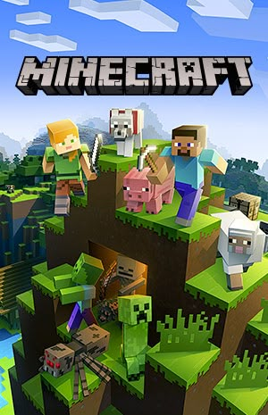

MINECRAFT
17 de Mayo 2009 | Supervivencia, No lineal, Acción, Aventura
Desarrollado por: Markus "Notch" Persson
Sinopsis
Minecraft es un juego formado por bloques, criaturas y comunidades. La elección es tuya: sobrevivir a la noche o crear una obra de arte. Pero, si te abruma tener que explorar un nuevo y vasto mundo por tu cuenta, ¡no temas! ¡Vamos a explorar de qué va Minecraft!
No hay un objetivo definido en Minecraft, ¡puedes jugar cómo quieras! Por eso se le suele llamar "juego sandbox": puedes hacer montones de cosas y hay montones de formas de jugar. Si tu pasión es la creatividad, puedes usar los bloques para construir todo lo que puedas imaginar. Si lo tuyo es el coraje, puedes explorar el mundo y enfrentarte a arriesgados desafíos. Los bloques pueden romperse, fabricarse, colocarse para dar forma al paisaje o usarse para construir creaciones fantásticas. Dependiendo de cómo quieras jugar, podrás luchar contra las criaturas o entablar amistad con ellas. El mundo de Minecraft permite vivir aventuras épicas, meditar tranquilamente y todo lo demás. ¡Puedes incluso compartir tus creaciones con otros jugadores o jugar en mundos comunitarios!
Crítica
Minecraft es uno de los videojuegos más innovadores y exitosos de todos los tiempos. Con su estilo visual de bloques y su mundo abierto, ofrece una experiencia única de creatividad, exploración y supervivencia. Lo que a simple vista parece un juego simple, es en realidad una herramienta infinita donde puedes construir ciudades, sobrevivir en entornos hostiles o crear tus propias aventuras. Su modo multijugador fomenta la colaboración y su comunidad activa lo mantiene vivo con mods y contenido constante. Aunque su estética puede parecer básica, Minecraft demuestra que la imaginación es más poderosa que los gráficos. Un verdadero clásico moderno.